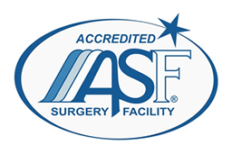

WELCOME TO SOHO VASCULAR SURGERY
A Premiere Vascular Care Outpatient Facility
SOHO Vascular Surgery is conveniently located at 123 Lafayette St in Manhattan. We are an independent vascular surgery facility. Our operating rooms are accredited by AAAASF to perform office based surgeries. We specialize in a variety of vascular care procedures including hemodialysis fistula access,maintenance and repair. Permacath insertion, replacement and removal. Laser ablation of varicose veins; as well as ultrasound vascular studies.
OUR MISSION
Our goal is providing an ambient, efficient and high standard outpatient service
for dialysis patients to reduce stress and improve life quality

OUR TEAM
Medical Director & Chief Surgeon – Feng QIn
Feng Qin, MD, is a vascular and endovascular surgeon. Trained at St Vincent’s Catholic Medical Center Manhattan,University of South Alabama and North Shore–Long Island Jewish. He is affiliated with Lenox Hill Hospital, Beth Israel Hospital and St John’s Episcopal Hospital.Clinical Manager – Jon Mazzeo
Jon Mazzeo, BCLS, ACLS, NYSNA, CCRN, is the Clinical Manager for Soho Vascular Surgery. Jon joined SVS in 2012 and brings 40 years of outstanding clinical service with her. Jon is responsible for facilitating the needs of all of our patients during their visit to the facility. In addition, Jon manages the Soho Clinical Team which includes all medical assistants,licensed independent practitioners ,radiologic technologists and registered nurses.
